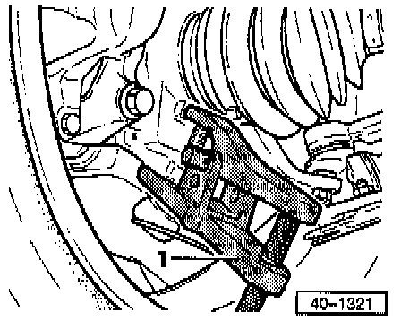
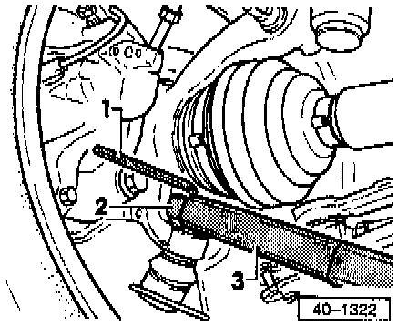

Ball Joint, Lower
REMOVAL1. Loosen 12 point self-locking nut with vehicle standing on its wheels.
2. Disconnect axle shaft at transmission drive flange.
3. Mark installation position of ball joint to control arm.

4. Remove outer bolts -arrow A-.
5. Loosen inner bolt arrow -B-.
6. Separate connection between ball joint and control arm.

7. Swing wheel with suspension strut outwards and support.

8. Install ball joint splitter -1- tool No. Kukko 128/2 or equivalent, and press out ball joint.
NOTE:
- Place transmission jack tool No. KL-7755 or equivalent underneath (there is a risk of injury from falling parts when pressing out the ball joint).
- To protect ball joint threads leave nut threaded on a few sums.
INSTALLATION
1. Position ball joint in wheel bearing housing.

2. Install new self-locking nut, and counterhold with hex key (6 mm).
1 - Hex key (6 mm), shortened by approx. 10 mm (3/8 inch)
2 - Box wrench (19 mm), insert or slotted box wrench insert
3 - Torque wrench
3. Secure ball joint to control arm (bolts on old marks).
NOTE: Check that boot is not damaged or twisted.
4. Tighten ball joint to wheel bearing housing to: 45 Nm (33 ft. lbs.)
5. Tighten ball joint to control arm to: 35 Nm (26 ft. lbs.)